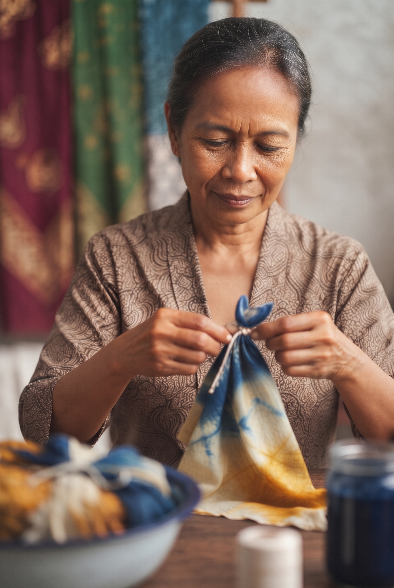

Tentang Kami

Melestarikan Kerajinan Batik Jumputan Khas Kampung Tahunan, Yogyakarta Sejak 2011
UMKM Batik Jumput Jogja Ibu Sejahtera didirikan pada tahun 2011 oleh Ibu Agus dengan tujuan mengembangkan keterampilan membatik serta memperkenalkan seni kerajinan batik jumputan kepada masyarakat.
Berlokasi di Sentra Kerajinan Kampung Tahunan
Beralamat di Jl. Soga No. 33, Tahunan, Kecamatan Umbulharjo, Kota Yogyakarta, Daerah Istimewa Yogyakarta 55167. Rumah Ibu Agus menjadi pusat kegiatan operasional mulai dari pengolahan bahan baku, pembuatan motif, hingga galeri penyimpanan produk.
Skala Industri Rumahan yang Fleksibel
Kegiatan usaha dijalankan dalam skala industri rumahan yang dikelola langsung oleh pemilik bersama tenaga kerja terampil yang jumlahnya menyesuaikan volume pesanan pelanggan.
Pemasaran Langsung & Digital
Produk dipasarkan secara langsung di rumah produksi, melalui media sosial, platform e-commerce, serta promosi dari mulut ke mulut dengan kisaran harga Rp200.000 hingga Rp600.000 tergantung jenis kain, kerumitan motif, dan kombinasi warna.
Setiap helai produk Batik Jumput Jogja Ibu Sejahtera dikerjakan secara manual untuk menjaga keaslian motif dan kualitas perintangan warna.
Ciri Khas Motif Jumputan Latar Ringkel
Salah satu keunggulan khas kami adalah perpaduan teknik jumputan dengan teknik ringkel melalui metode jahit cubit (smock) yang menciptakan pola perintangan warna unik dan bertekstur artistik.
Tahapan Pengerjaan Manual yang Teliti
Proses produksi dilakukan secara bertahap mulai dari persiapan kain, pembentukan motif dengan teknik ikat atau jahit cubit, proses pewarnaan, hingga tahap penyelesaian kain. Waktu pengerjaan berkisar antara 4 hari hingga beberapa bulan sesuai tingkat kerumitan motif.
Pengelolaan Bahan Baku Terencana
Bahan baku diperoleh dari pemasok terpercaya dan disiapkan menyesuaikan kebutuhan pesanan pelanggan agar kualitas warna dan serat kain tetap terjaga.
Selain memproduksi karya batik jumputan, kami membuka ruang belajar bagi masyarakat yang ingin mengenal dan mempraktikkan langsung teknik membatik.
Praktik Langsung di Rumah Produksi
Kegiatan pelatihan diselenggarakan langsung di lokasi workshop Jl. Soga No. 33, Tahunan, Yogyakarta sehingga peserta dapat melihat langsung suasana kerja dan peralatan produksi yang digunakan.
Materi dari Dasar hingga Pewarnaan
Peserta dibimbing mulai dari pengenalan jenis kain, teknik mengikat pola jumputan maupun jahit cubit (smock), hingga pencelupan warna.
Terbuka untuk Berbagai Kalangan
Melayani kunjungan belajar untuk masyarakat umum, pelajar, mahasiswa, maupun kelompok wisata edukasi yang ingin melestarikan warisan kriya tekstil Yogyakarta.
Tahun Berdiri
Kategori Produk Utama
Minimal Hari Pengerjaan
% Kerajinan Buatan Tangan
Keunggulan Karya
Komitmen Kualitas Batik Jumput Jogja Ibu Sejahtera